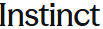
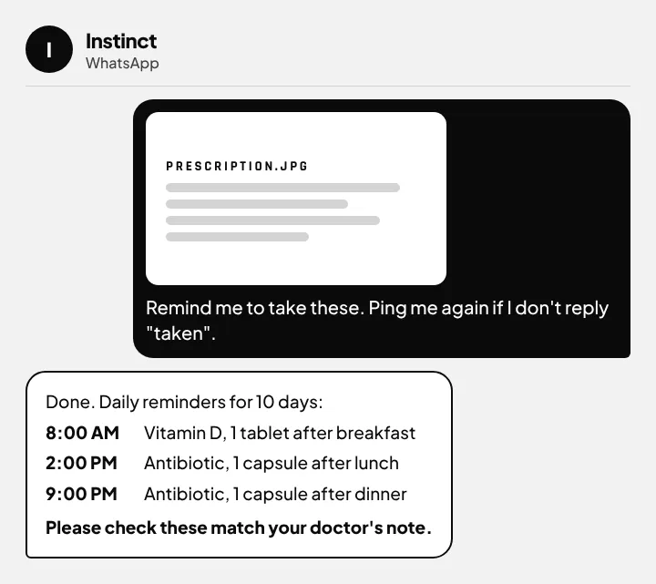

Your personal assistant, on WhatsApp.
- Join the waitlist or use an inviteInstinct is waitlist and invite-only · instinct.com
- Text Instinct to get startedPhone number → code → name and email → pick WhatsApp or iMessage
- Send it anythingText, voice notes, photos, screenshots or PDFs · copy a message below
Get Instinct

Waitlist and invite-only. Have an invite link from a friend? Open it. No invite yet? Join the waitlist on the website.
Join the waitlist on instinct.comWhat you can send it
- Text
- Voice note
- Photo
- Screenshot
- Video
It understands all of these, so you don't have to type everything. Talk, snap a photo or forward a screenshot.
Use 1: To-dos and reminders
Send a voice note or type it. You can also send a photo of a handwritten list, a school circular or a wedding invite, and it pulls out the dates.
Send this
Be my to-do list. Remind me: pay rent on the 5th at 9 am, call Amma every Sunday at 7 pm, renew my bike insurance next Friday. Every morning at 8, send me today's to-dos. When I send you a photo of a list, invite or circular, add the tasks and dates from it.
Use 2: Medicine reminders
Send a photo of the prescription or the medicine strip. It sets a reminder for each dose and nudges you again if you forget. Works great for parents too.

Send with the photo
Remind me to take the medicines in this photo. List each medicine with its dose and time so I can check it first. Then message me at each time, for as many days as the prescription says. If I don't reply "taken" within 15 minutes, remind me again.
Use 3: Order fresh groceries
Send a photo of your fridge or kitchen shelf, a photo of a recipe, or just a voice note like “atta, 2 litres milk, curd, onions”. It makes the list and orders it after you say yes.
Send with the photo
Look at this photo and make my grocery list for this week for [NUMBER] people. Choose fresh items and the best-value options. Show me the list, the store and the total price first. Don't order anything until I reply "yes".
Use 4: Price-drop alerts
Take a screenshot of the product in any shopping app, or a photo of it in a shop. Send it with your target price. If it can't track that site, it will tell you.
Send with the screenshot
Watch the price of this product. Check it every day and message me as soon as it drops below ₹[PRICE], with the link and the store. Don't buy it, just tell me.
Need help? Full steps
How to sign in
- Join the waitlist or use an invite. Instinct is waitlist and invite-only. Join the waitlist on instinct.com, or ask a friend who uses Instinct for an invite link. Don't buy invites from strangers.
- Open your invite link on your phone (or the link you get when you're off the waitlist) and tap Text Instinct to get started.
- Enter your phone number and type in the code it sends you.
- Add your name and email, then choose WhatsApp or iMessage.
- Save Instinct as a contact and send “Hi”. From now on, you just chat with it like a friend.
The screens may look slightly different for you.
More things to try
- Photo of a bill: “Explain this bill, check for mistakes, and remind me 2 days before it's due.”
- Screenshot of a ticket: “Remind me when to leave for this train, and the night before to pack.”
- PDF of a policy or agreement: “Summarise this in 5 points and tell me anything I should worry about.”
- Family group chat: add Instinct to plan a dinner, a trip or a birthday together.
Stay safe
- Never share your bank, UPI or card PIN and passwords with it.
- Always ask it to show you the order and price first, and reply “yes” only when it's right.
- Start with simple tasks like reminders and lists before connecting your email or accounts.
- For medicines, follow your doctor. The reminders only help you remember.
Example
"Need milk, eggs, atta, and remind me about Amma's tablets at 9 tonight."
"Grocery list ready: milk 1 L, eggs ×12, atta 5 kg, total about ₹540. Reply yes to order. Reminder set: Amma's tablets at 9:00 pm tonight."